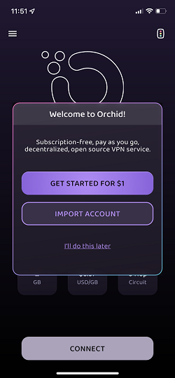
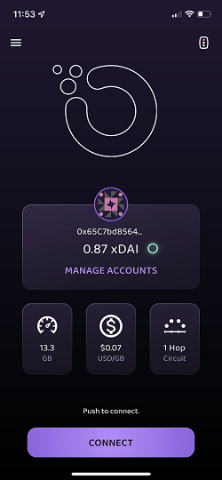
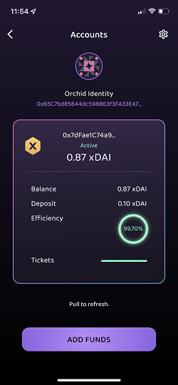
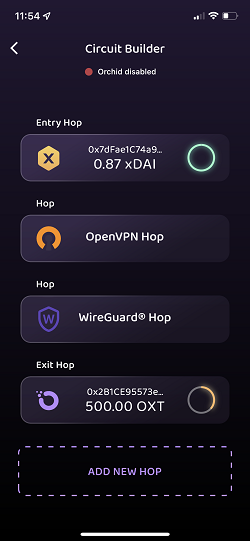
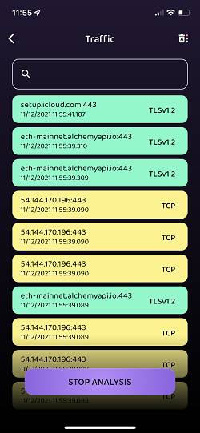
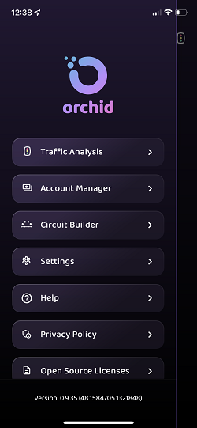

Using the Orchid app
Welcome to the Orchid userguide. For product support, send an email to help at orchid.com.
Quick Setup
To get a single hop connection running ASAP, simply open the Orchid app and tap "Get started for $1". Confirm the $1 USD (or equivalent local currency) in-app purchase. Orchid will then fund your account on the xDAI blockchain with a 0.10 xDAI deposit and ~0.87 xDAI balance. The app will also construct a single hop circuit using the new account.
After the purchase completes, hit the connect button to start the VPN. You will connect randomly to an Orchid provider after you hit the button. The provider selected is based on the amount of OXT that provider staked on the network. This is for secruity and incentive alignment.
It's that easy!

Home
The home screen displays key pieces of information about how your device is connecting to the Internet, your account balance(s), an estimate on how many GB of service you could buy and the current average price of bandwidth. Tapping 'manage accounts' will take you to the account manager. Tapping '1 Hop Circuit' will take you to the circuit builder. The average price per GB for VPN service is displayed by polling the Chainlink oracle that averages the cost of bandwidth across the different providers in the network.
Problems with your account balance, deposit or circuit will be denoted with a red !.

Circuit and account display
The active circuit and associated Orchid accounts that are paying for each hop are displayed in the middle of the home screen above the Manage Accounts link. Tapping on an Orchid icon will display the balance of the account. This display will denote WireGuard and OpenVPN nodes using the appropriate icons and displays the entire circuit from left to right starting with the entry hop and ending with the exit hop. To change your active circuit, tap the '1 Hop Circuit' display to go into the circuit builder.
Orchid identity
The hexidecimal address displayed for each hop in the circuit display is the Orchid identity associated with that account. NOTE: An Orchid identity is NOT an Ethereum wallet, even though it appears like an Ethereum wallet. Never send cryptocurrency to your Orchid identity. Doing so could cause loss of funds.
An Orchid identity is your public address within the nanopayment system. When you first start the app, a new identity is created for you. You can easily create/delete/import/export identities in the account manager. You can add funds to an identity in the account manager on the xDAI chain using an in-app purchase or you can take the Orchid identity and add funds to it in the dapp.
Connecting
For the connect button to become available, you will need a funded account and an active circuit. If the circuit widget displays "0 Hop Circuit" you will need to tap on it and go into the circuit builder to create a circuit before you can connect.
After tapping connect Orchid will:
- Display "Orchid connecting”
- Pause all Internet traffic on the device
- Call the default Ethereum RPC to access the stake-weighted random selection smart contract
- Check to ensure that provider is in the Curator
- Connect to the provider
- Change the status to “Connected” and animate the logo
Note that this process can sometimes take a few dozen seconds, depending on the status of Orchid’s providers. If the the process is stuck, it could be because the Orchid providers are rejecting your Orchid account or because your device is having trouble connecting to the default Ethereum RPC endpoint, and so cannot get information about the state of the provider directory.
It is also possible to connect to a server, have the screen change states, and then have the connection die. Typically turning the app off/on can help kickstart the reconnect process whenever you experience no connectivity.
Account manager
The account manager allows you to manage multiple accounts and associated identities. It is also where you can go to export and import an accounts. The identity is displayed under "Orchid Identity". The funder wallet address is displayed inside the account. The identity and funder wallet together are key bits of information for each account. Learn more about Orchid's layer 2 nanopayment system: Orchid accounts.

Add funds with an in-app purchase
Orchid includes a system for buying "prepaid access credits" to connect to our list of preferred providers. Orchid VPN providers that are not part of the preferred provider system cannot accept payments in prepaid access credits, which limits the number of providers available to you when using prepaid access credits. Also Orchid manages the funder wallet for the account. Therefore the crypto purchased via in-app payments is custodial, and not available for withdaw or transfer by the user.
The add funds option is available on iOS/macOS and Android. You will need a valid form of payment attached to your Apple or Google account associated with the phone to make the in-app purchase. The fiat amount of the in-app payment will be denominated in your local currency. The purchase will convert the amount to xDAI and fund the selected identity on the xDai blockchain. The xDai chain is a stable payments blockchain designed for fast and inexpensive transactions. Orchid accounts created on xDai are viewable using the BlockScout Explorer. Learn more about xDai.
When using the "Get started for $1" quick start, you will fund the account for $1. From the account manager you can add funds in three different preset amounts: $1, $5 and $20 which is more appropriate for topping up an account when funds run low. Note that there is no significant advantage in terms of pricing for purchasing a larger account. Orchid is simply converting your fiat to the xDAI stablecoin and placing those funds on-chain in your selected account.
The average price per GB across the network is denoted on the homescreen and varies from provider to provider.
Add funds with the dapp
To fund an account yourself you will need a wallet (we primarily test with Metamask's Chrome plug-in) and the appropriate funds for the blockchain that you want to house the account. For example, OXT on Ethereum. You will also need enough cyrpto to pay for the gas fees associated with executing the nanopayment contract.
Note: Do not transfer OXT to your Orchid identity! That will not work. You will need to use the Orchid dapp in order to manage your on-chain funds yourself. All transactions using the dapp including funding/unlocking/withdrawing fund the account will require the user to pay for network fees on the blockchain that houses the account.
Before you can use the Orchid dapp, you will also need an Orchid identity that you intend to fund. From the account manager you can tap on the hexidecimal string under Orchid Identity to copy the identity to your clipboard. Paste this information into the Identity field in the dApp to manage that account.
Learn more about how to create an account in the Orchid dApp.
Importing accounts
To import existing Orchid accounts, tap manage accounts -> cog wheel -> import to bring up the interface to either scan the QR code or paste in the text of an exported identity. That will import all the accounts associated with that account's identity and make them available.
Exporting accounts
To export your selected Orchid account, tap the cog wheel in the upper right and then 'export'. You will then get a QR code of the key and a copy button that will copy the key into your clipboard.
With the key, the funds in the Orchid account can be spent or extracted. It is a good practice to save the key in your password manager or to store it somewhere safe. The best practice for storing all the relevant details of an Orchid account is to save the funding wallet as a username and the raw key as the password in a password manager.
Circuit builder
Orchid is the only multi-hop VPN application that allows you to make an "onion route" through multiple independent VPN servers with layered encryption between each node. This screen allows you to manage the VPN server connections that form your circuit.
A single hop circuit is similar to a typical VPN provider. Three hops is a standard "onion route". For more information about the implications of multiple hops, refer to the FAQ section on Security.
Tap on the Add New Hop button to add a hop. Swipe a hop to the left or right to delete the hop. Long press on a hop to move it up or down in the circuit. The entry node is at the top of the screen and the exit node is at the bottom. While Orchid accounts are stored in the account manager, there is no way to store OpenVPN or WireGuard hops except by adding them to your active circuit. See below on how to save your circuit and export the entire configuration, which could help you manage inactive OpenVPN or WireGuard hops.

Orchid hop
Orchid hops are not a single specific server, but are rather defined as an Orchid account that will pay for a randomized node picked from the stake weighted random directory. When you connect, the app runs through the directory and gets back a server to use in the circuit. The randomness is an important part of Orchid. For detailed information on stake-weighted random selection and why it matters, read section 4.4 of the Orchid whitepaper.
To add an Orchid node you will need to first select the identity of the payment account and then select the funding wallet. The Orchid identity and funding wallet are two key pieces of information that define an Orchid account.
The app scans blockchains using RPC servers for active accounts. If account detection fails, it is possible to paste in the funding wallet address if you are certain
WireGuard
Orchid supports WireGuard. When you add a WireGuard server to your circuit, Orchid will connect to that specific WireGuard server. Tap Add a Hop and then paste in your WireGuard configuration file and hit save.
OpenVPN
Orchid supports OpenVPN. Tap Add a Hop and then put in the information for that OpenVPN server.
OpenVPN configuration files can vary from VPN provider to VPN provider. We don't know if all configurations work; please email us at help at orchid dot com for support or to let us know what is working or not working for you. We appreciate your help!
Here are some items to note and check:
- Orchid uses OpenVPN3 without command line flags
- user/pwd is provided when adding the config. If your config contains
auth-user-passthen try addingclient-cert-not-requiredon a newline - try removing arguments to
auth-user-pass
Saving your circuit
For Orchid hops, the app stores Orchid account information from the account manager. Deleting an Orchid hop doesn't destroy any information.
For WireGuard and OpenVPN, there is no way to save each specific hop at this time. If you delete either type of hop, the config information that you entered will be deleted.
One mechanism to save this information is to export your entire circuit configuration. You can save this as text and then re-add it later. While not perfect, this method will let you save circuits by exporting them. To export and import a circuit, go to the hamburger menu -> settings -> manage configuration -> export and save the text.
Traffic analyzer
Orchid has a built-in traffic monitor that can run with or without an Orchid account (it's a free feature!). Using the traffic monitor is similar to WireShark--and Orchid works on iOS! The traffic monitor also works across every platform that Orchid supports: iOS, macOS and Android.
To enable the traffic analyzer and review your devices connections, top on the traffic light icon in the upper right of the homescreen or tap the hamburger menu -> traffic analyzer.

Traffic filters
The traffic analyzer supports different ways to filter the traffic to better make sense of the connections your phone is making.
- Enter a hostname or partial hostname into the search bar to show only matching rows.
- Enter multiple terms separated by a space to combine hostname filters using “AND” logic. e.g. “goog api” will match rows including both “goog” and “api”, such as “api1.google.com”.
- Use a “-” minus sign to exclude terms. e.g. “-goog” will show all hostnames except those matching “goog”. You can mix these to include and exclude combinations such as: “google -api” to find all “google” entries excluding those with “api”.
- Use “prot:
”to filter by protocol name. e.g. “prot:imap” will match all traffic identified as “imap” connections and “-prot:dns” will filter out all DNS queries from the results.
Settings
From the homescreen, swipe right or tap the hamburger menu in the top left. From there you can navigate to all the screens in the app, get in-app help, read the privacy policy, open source license and version number on the bottom. For settings, tap Settings.

Default Curator
Orchid uses an on-chain curated list which filters the viable nodes to a custom subset called a curator. Orchid's official curator is partners.orch1d.eth. The Orchid client uses this list to prevent certain kinds of attacks from malicious exit nodes (e.g. SSL downgrade attacks) by using a default list with trusted VPN partners.
The curator is set for each Orchid hop. This setting is the default that will appear with you add a hop. By leaving this blank, you will remove curation and accept a connection to any provider you connect with in the directory.
The curation system is open and it is possible for anyone to make a curated list.
Query balances
Orchid uses access to RPC endpoints in order to get information about account balances. If you do not want Orchid to connect to RPC endpoints for security reasons, turn off query balances.
Advanced configuration: Ethereum RPC
The advanced configuration box is where you can input custom commands into the client. Mainly this is used for testing purposes, however there are some user facing commands that are useful.
One of the most useful settings is the Ethereum RPC endpoint. For Orchid to connect, the app needs to access the Ethereum blockchain to access the stake weighted directory in order to find a provider. The default RPC uses Alchemy. You can overide the default Ethereum with rpc='<URL to ETH Endpoint>' (no ; or other characters). There are many ways to get access to the latest state of the Ethereum blockchain:
- Cloudflare runs a public endpoint. To connect add this line:
rpc='https://cloudflare-eth.com'with no ; or extra spaces - You can run your own Ethereum node using GETH, enable the RPC endpoint and then set the `rpc='
' - Infura offers free Ethereum endpoints after you register for an account
- POKT Network offers a free Ethereum endpoint after you register for an account
Note that both POKT and Infura will require an account. After you register, they will provide a unique URL that you can use in the advanced configuration.
Without a functioning Ethereum endpoint, Orchid will not connect. When troubleshooting, use a browser to test and see if certain domains are blocked, such as Alchemy.com. If your browser cannot open Alchemy.com, then it is probably blocked in your region and you will need to find an alternative Ethereum RPC to connect.
Configuration management
The configuration management screen is a way to export and import all of the accounts currently on the app along with the current active circuit. This is very useful for backing up all your accounts and current application state.
Note: the keys to your Orchid account(s) will be exposed when you export your configuration. Use caution when exporting and do not store your keys in plaintext.
Active circuit: the active circuit contains all the information sent to the backend vpn tunnel to form the multi-hop route. For OpenVPN and WireGuard hops, the account information and details to connect to that VPN node is encoded. For each Orchid hop, there is a curator, the public address of the funding wallet, the Orchid account private key, chainid of where the account is housed, the currency and the RPC endpoint for accessing information on the blockchain where
hops = [{protocol: "orch1d", curator: "partners.orch1d.eth", funder: "<public address of funder wallet>", secret: "<Orchid account key>", chainid: 100, currency: "DAI", rpc="https://rpc.xdaichain.com/"}];
protocol: the VPN tunnel protocol. Either "orch1d" for Orchid, "openvpn" for OpenVPN or "wireguard" for WireGaurd curator: for Orchid hops, this is the curator for this hop funder: the public address of the Ethereum wallet that created the account using the dapp. For xDAI accounts associated with the pre-paid access credit system, this address will be the custody wallet run by Orchid secret: the key of the Orchid account. Accessible from the account manager -> gear icon -> export chainid: the chainid of where the account is stored currency: the currency of the account balance and deposit rpc: the RPC endpoint used to look up account information on that chain
Windows Beta
Note: this is an early beta release that requires some effort on the command line in addition to manually editing files and installing a driver. Thank you for trying out our beta! Our product team would love to hear your feedback or help needed on our Discord Channel
Download the Orchid client for Windows on Github
- Go to the Orchid releases page
-
Download the most recent
orchidcd-win_.0.x.x.exefile and ensure it is at least version 0.9.35 or greaterorchidcd-win_.0.x.x.exe is the client, the other orchidd-win_.0.x.x.exe executable is the server
Install the OpenVPN Tap driver
- Download the Tap driver here: https://build.openvpn.net/downloads/releases/tap-windows-9.24.2-I601-Win10.exe
- Run the exe file and follow the prompts to install the Tap driver
- Restart the machine
Prepare your configuration file
-
Read the above section on Configuration Management. You will need to export or create a complete configuration file that includes the details of all your hops. This can be done simply by exporting your active circuit from the Settings -> Configuration Management -> Export Hops Configuration and then coppying the line starting at "hops =". For XDAI accounts, some modifications are neccesary.
-
Paste your Circuit from the configuration manager into a text editor. Note if you have an OXT account on Ethereum or an XDAI account on xDAI
-
Enter a newline and add in the Ethereum RPC with
rpc = "https://cloudflare-eth.com/"; -
The final format should look like this for OXT accounts on Ethereum: Note: funder starts with 0x and secret does not
hops = [{curator: "partners.orch1d.eth", protocol: "orchid", funder: "0x000000000000000000000000000000000000000", secret: "00000000000000000000000000000000000000000000000000000000000000000"}];
rpc = "https://cloudflare-eth.com/";
- To use XDAI accounts on xDAI, there is an extra step. You will need to add
, rpc="https://rpc.xdaichain.com/after the currency variable for each hop denoted in {}. The final format should look like this:
hops = [{protocol: "orch1d", curator: "partners.orch1d.eth", funder: "0x000000000000000000000000000000000000000", secret: "00000000000000000000000000000000000000000000000000000000000000000", chainid: 100, currency: "DAI", rpc="https://rpc.xdaichain.com/"}];
rpc = "https://cloudflare-eth.com/";
-
Save the file as
'orchid.cfg'-
In Notepad, you will need to make sure
.txtis not appended. To do that, when you hit Save, select the “Save as type” dialog box and select “All Files.” This will allow you to save the file with the.cfgfile extension. -
Save as
'orchid.cfg'and make sure it is in the same folder as the .exe file\
-
Run the Orchid client
- Open the command prompt as Administrator
- Click the Start/Windows icon button
- Type
CMD - Right click the Command Prompt icon and select
"Run as administrator"
- At the command line prompt, navigate to the folder where you downloaded the .exe and saved the .cfg file
- An easy way to do this is to copy the file path from the File Explorer top bar and then typing the command
"dir <pasted in filepath>"
- An easy way to do this is to copy the file path from the File Explorer top bar and then typing the command
- To run orchid, type
'orchidcd-win.exe --config orchid.cfg' - To stop, terminate the program using CTRL+C
Gathering Logs
When debugging client-side issues, you might be requested to share logs. These logs provide advanced details about what the Orchid client is doing behind the scenes to provide you with a private browsing experience. This page is designed to help you collect and share the logs.
Android Prerequisites
Start by turning on developer and debugging mode on the phone by going to Settings -> About Phone -> About Software and tapping on the build number repeatedly until it prompts you to enable developer mode. Then go to Settings -> Developer Settings -> Turn on USB Debugging. Finally, you can run the following command on your computer with your phone connected via USB to view the logs.
Android and iOS Prerequisites
When you connect your device to your computer, it will prompt you to trust the computer. It is important that you do so. Otherwise, you will be unable to collect logs.
Cydia Impactor
The easiest way to gather logs from both iOS and Android devices is through Cydia Impactor. In the main window, use the select box to pick the correct device (if you only have one mobile device connected to your computer, this will be done for you). Next, go to Device -> Watch Log.... A terminal window will appear and it will start to show a streaming syslog from your mobile device.
adb logcat (Android)
If you are using an Android device, you can alternatively collect logs through the Android Debug Bridge (ADB). You can follow this guide to install adb on Windows, macOS, or Linux. Once installed, you can run the following command in a terminal to view the logs:
adb logcat
Sanitizing the Logs
The logs you gather will contain information from all applications and actions taken on your device during the period that logs are being gathered. These are not all necessary for debugging purposes. You can optionally filter out all lines that do not contain the string orchid as a quick way to sanitize the output. You can do this with a command like:
grep -i 'orchid' client.log
Where client.log is the file containing the syslog output from the device. You should also be careful to filter out your various secret keys from the logs:
grep -vi 'secret' client.log
Sharing the Logs
The logs you gather will be quite long. You almost certainly do not want to paste them in their entirety into something like a Telegram message. Instead, we encourage you to either share them as an attachment via your preferred method of communication. Or if you are using a communication platform that doesn't support attachments, you can utilize a private pastebin service such as GitHub Gists, which will provide you with a secret URL you can share to grant access to your logs.
Orchid App troubleshooting/FAQs
Help, my Internet connection shut off after I turned Orchid on
Orchid has a built-in “kill switch” and so turning Orchid on will destroy all existing connections to the Internet and force them to go through Orchid. If Orchid is trying to connect, the Internet will be shut off until a connection is established. This is a feature that ensures that none of your Internet traffic will accidentally leak due to a disconnect/reconnect without you pressing the button first. This ensures that when you hit “connect” your traffic is now only going through Orchid.
Read Connecting for more information on exactly what happens when you hit connect.
I can’t find my QR code after creating an account in the dApp
When the QR code or text of an account is truly lost, the account is lost as well. If the account was ever added to the Orchid app, the account should appear under the cog wheel next to your Orchid Address. (Or in the old, multi-hop interface 'View Deleted hops' on 'Manage Profile'.)
The funds are NOT LOST! To recover the funds from a lost account, you will need to withdraw the funds from that Orchid account using the dApp and the funder wallet used to create the account.
Low balance/deposit/efficiency warning
Under certain market conditions, users need to increase the size of their deposit. The market conditions are primarily driven by the price of the currency and the amount of network fees required for the provider to claim a ticket. The face value of the ticket needs to be large enough for it to be profitable to pay the network fees to grab it.
To fix this, see Deposit size too small